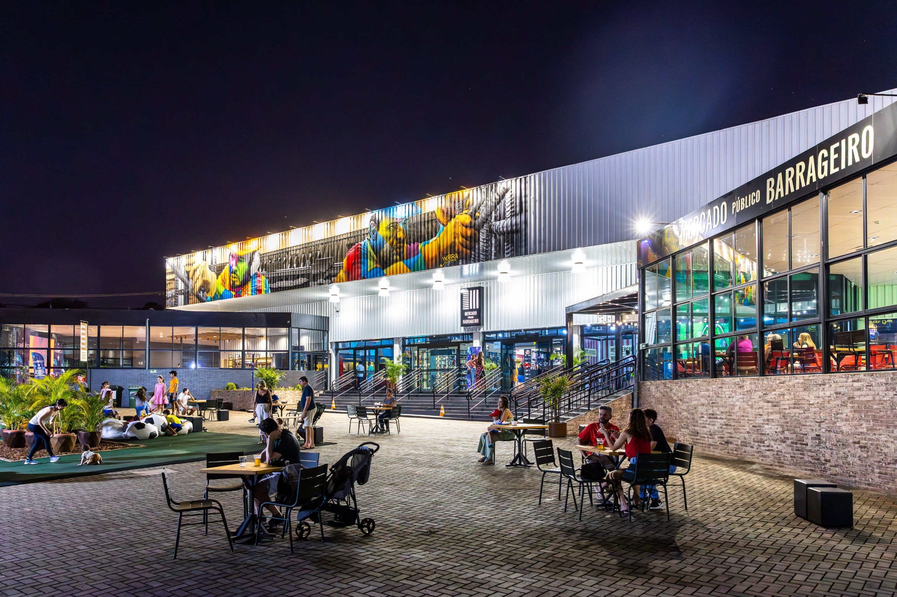

<section id="light-card">
    <div class="p-2 container col-sm-12 col-lg-8 text-justify">
        <h2 class="p-4 text-center">Jantar</h2>

        <p>O jantar da XXV ERAD/RS será realizado no Restaurante Dos Barrageiros localizado no Mercado Público de Foz do Iguaçu.</p>

        

        <p>Valor: R$59,90 por pessoa</p> 
        <p>A reserva deve ser feita até o dia 24/04 ao meio-dia, na secretaria do evento. O pagamento será feito diretamente no restaurante. </p>

        <p><b>Haverá transporte gratuito do Parquetec para o restaurante.</b></p>

        <h4><b>Cardápio</b></h4>
        <h5>Pratos quentes:</h5>
  <ul>
    <li>Arroz branco</li>
    <li>Arroz integral</li>
    <li>Feijão Preto Gordo do barrageiro</li>
  </ul>

  <h5>Carnes:</h5>
  <ul>
    <li>Coxa e sobrecoxa desossada ao molho de laranja</li>
    <li>Lombo suíno c/ molho de abacaxi</li>
    <li>Posta recheada</li>
  </ul>

  <h5>Guarnições:</h5>
  <ul>
    <li>Macarrão talharim</li>
    <li>Molho de queijo</li>
    <li>Molho rústico</li>
    <li>Conchiglione de marguerita</li>
    <li>Legumes rústicos c/ ervas e açafrão da terra</li>
    <li>Puré de batata</li>
  </ul>

  <h5>Saladas:</h5>
  <ul>
    <li>Salada verde c/ frutas tropicais</li>
    <li>Salada de tomate</li>
    <li>Salpicão de frango</li>
    <li>Beterraba ralada</li>
    <li>Caponata de berinjela</li>
  </ul>

  <h5>Sobremesas:</h5>
  <ul>
    <li>Pudim de leite</li>
    <li>Salada de frutas</li>
  </ul>    
    </div>
</section>


        
